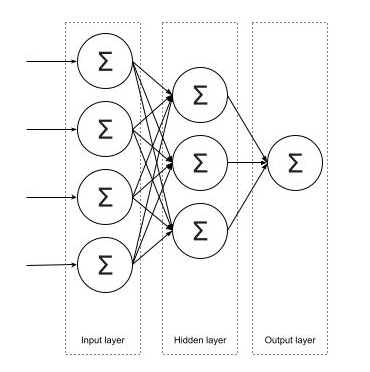

Legal and Ethical views on ANN applications - Initial Post
In his article, Hutson (2021) emphasizes some dangers of using language models such as ChatGPT.
ChatGPT has several pros and cons. Working as a software engineer requires that, most of the time, the code I write must be optimized.
I have asked ChatGPT to create unit tests for my code or do a peer review to find unexpected or hidden errors, which works well. However,
with the new release of ChatGPT to the public (via their website), Samsung decided to allow their teams to use it to automate coding tasks or
other tasks that can bump performance. The bad news is that Samsung did not audit OpenAI's tool correctly, leading to leaked sensitive information
by Samsung employees when submitting it to ChatGPT (Mitchell, 2023).
Another example of howChatGPT threats to data privacy occurred was when a user could extract internal documents using the new Bing search bar
powered by OpenAI's language model ChatGPT. This was achieved by using prompt injection (Winder, 2023).
Additionally, there are several concerns about biased responses from ChatGPT. When AI applications are trained using historical data, one of the
effects is that those models also learn biases in that data, such as race, gender, nationality, or religion biases (Pazzanese, 2020).
What is a ANN?
The artificial neural network is a mathematical model inspired by human neural networks. Each artificial neural network is composed by a set of
single units called neurons that are interconnected to other neurons to build more complex structures. Each neuron has a weight value that
defines the classification behavior of the network. In machine learning, we use the training stage to find the correct weight values of these neurons
in order to build a neural network with a good classification behavior (Miroslav, 2021).
Perceptron
The perceptron was invented by Frank Rosenblatt in 1957. It is the simplest unit in a neural network, thus it is a neuron. It is a binary classification
algorithm that consists of inputs, weight and bias values, and a step function that maps the output value to a range of 0, 1 or -1, 1 (Sharma, 2017).
This is a supervised learning algorithm, which means that we use previously labelled data to train the model. As we described in the introduction point,
during training, we aim to adjust the weight values and bias values of the neuron (in this case the perceptron) based on the error or difference between
the predicted value and the actual value. The goal is to minimize the error to find the optimal weights and biases that can classify correctly unseen data.
The perceptron
Single perceptron in Python
This is a resumed version of the code
provided in Unit 7 (University of Essex Online, 2022). The author of this snipet of code is Dr. Mike Lakoju. In it, he explains how to build a simple perceptron model using numpy.
import numpy as np
inputs = np.array([45, 25])
weights = np.array([0.7, 0.1])
def step_function(sum_func):
if(sum_func >= 1):
print(f'The Sum Function is greater than or equal to 1')
return 1
else:
print(f'The Sum Function is NOT greater')
return 0
step_function(sum_function_value)
Output:
The Sum Function is greater than or equal to 1
1
Code to build a simple perceptron model. Code taken from this jupyter notebook in Unit 7 (University of Essex Online, 2022).
From the code above, we can see the sum_func that represents the neuron (or perceptron). It makes a dot product between the inputs and
weights, and the result is passed to the step_function, which act as the activation function. In this case the step function returns 1
if the input is equals or greater than 1 otherwise it returns 0. Given the fact that this model only returns two values, we can state that it is a
binary classifier.
Multilayer perceptron

Multilayer perceptron (University of Essex Online, 2022).
There is a representation if a multilayer perceptron in the figure above. The network has three separated layers: an input layer, a hidden layer and an
output layer. This is the simplest representation of a multilayer perceptron network, but in real world applications, we can have any number of hidden layers
depending on the nature of the data we want to classify (Miroslav, 2021).
Neurons from the same layer do not communicate between them, but they are fully connected to networks from the next layer. A connection between neurons
from adjacent layers is associated with a weight value (Miroslav, 2021), used to adjust the classification behavior.
During training, to update the weights to their optimal values, we use an algorithm called backpropagation, which will be discussed in next sections of this
e-porfolio.